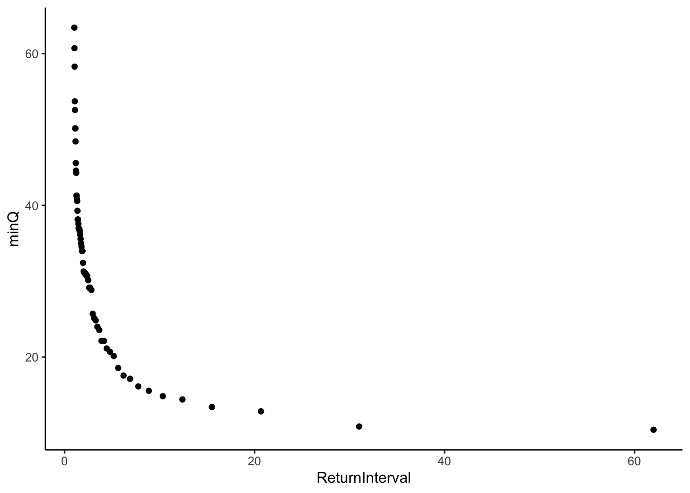
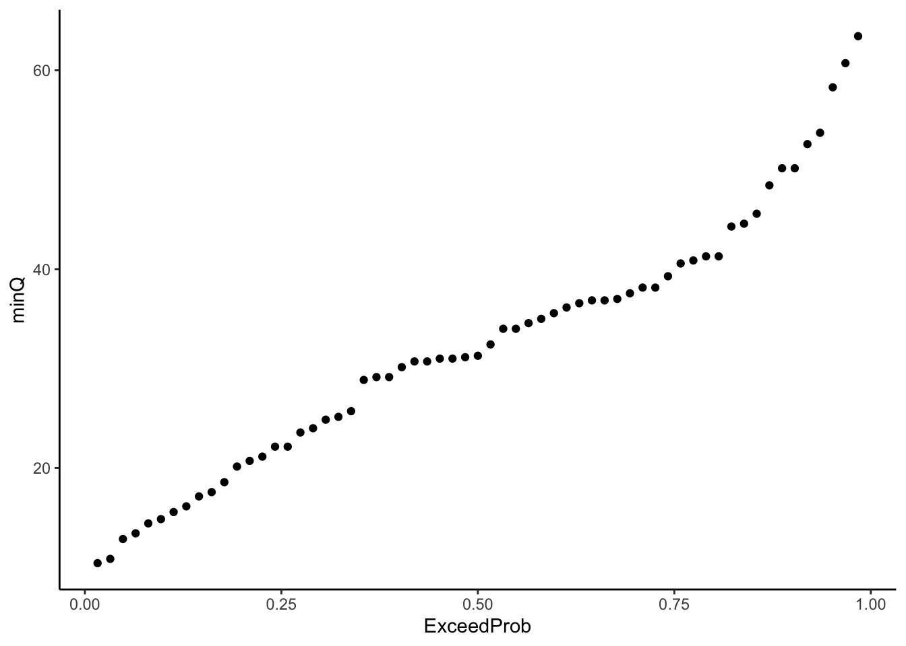
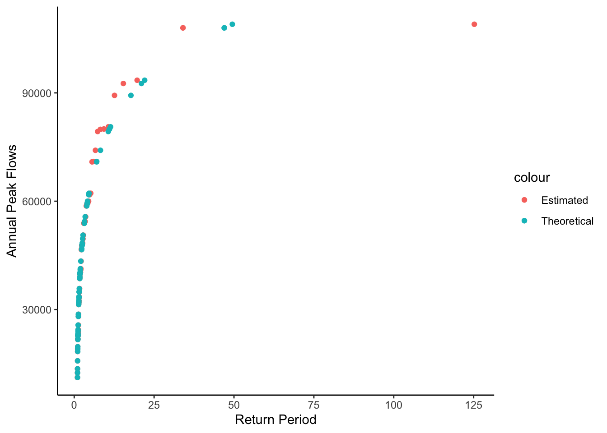

Chapter 12 Flood Frequency Analysis
Load packages
library(tidyverse)
library(dataRetrieval)Get peak flow data and plot it
radford <- "03171000"
peakflows <- readNWISpeak(radford, startDate = "1950-01-01")
ggplot(peakflows, aes(peak_dt, peak_va))+
geom_point()
#create rank column (minus flips the ranking)
#then clean it up, pull out only peak value, date, rank
peakflows <- peakflows %>% mutate(ranks = rank(-peak_va)) %>%
select(peak_dt, peak_va, ranks)
#look at it
ggplot(peakflows, aes(peak_dt, peak_va, color = ranks))+
geom_point()
head(peakflows)## peak_dt peak_va ranks
## 1 1950-12-08 62200 14.0
## 2 1952-03-11 28100 53.0
## 3 1953-02-21 34900 43.5
## 4 1954-03-01 48000 28.5
## 5 1955-04-15 32100 49.0
## 6 1956-04-16 33300 47.0
Plotting Position Formula
qi = Exceedance probability
N = Number of observations in your record
i = Rank of specific observation, i = 1 is the largest, i = N is the smallest.
a = constant for estimation = 0.44
Non-exceedence probability = pi = 1 - qi
Return period
Tp = 1/(1-p)
N <- length(peakflows$peak_dt)
a <- 0.44
#calculate exceedence/non-exceedence with gringorten and return period
peakflows <- peakflows %>% mutate(qi = (ranks - a) / (N + 1 - (2*a))) %>%
mutate(pi = 1 - qi) %>%
mutate(TpEst = 1 / (1-pi))
#Plot peak flows on y and est return period on the x
peakflows %>% ggplot(aes(x = TpEst, y = peak_va)) +
geom_point()
Need to fit these data to a distribution in order to make a continuous relationship we can use to predict the discharge of specific return intervals.
There are many distributions but a common one used is the Gumbel extreme value distribution.
 x is observed discharge data, u and x are parameters that shape the distribution.
x is observed discharge data, u and x are parameters that shape the distribution.
We can calculate u and x in order to create a distribution that best fits our data with the following equations. Notice x bar is mean and sx2 is variance. We will need to find sx, which is the square root of the variance, also known as the standard deviation.

Gumbel parameters
xbar <- mean(peakflows$peak_va)
sx <- sd(peakflows$peak_va)
alpha <- (sqrt(6)*sx) / pi
u <- xbar - (0.5772 * alpha)Now that we have the parameters that best represent our data as a Gumbel Distribution, we can use the formula to create the theoretical values for the return interval according to that distribution.
First calculate p theoretical with the equation above.
Then calculate Tp theoretical (the return period) as T was calculated above Tp = 1 / (1-p)
peakflows <- peakflows %>% mutate(pTheoretical =
exp(-exp(-((peak_va - u) / alpha)))) %>%
mutate(TpTheoretical = (1 / (1-pTheoretical)))
peakflows %>% ggplot(aes(x = TpEst, y = peak_va, color = "Estimated")) +
geom_point()+
geom_point(aes(x = TpTheoretical, y = peak_va, color = "Theoretical"))+
ylab("Annual Peak Flows")+
xlab("Return Period")+
theme_classic() 
Make the same plot but show the theoretical values as a line and log the x axis with limits set to 1 - 100.
With this plot you could look up the return period for any flood or the discharge level for any return period.
peakflows %>% ggplot(aes(x = TpEst, y = peak_va, color = "Estimated")) +
geom_point()+
geom_smooth(aes(x = TpTheoretical, y = peak_va, color = "Theoretical"))+
ylab("Annual Peak Flows")+
xlab("Return Period")+
scale_x_log10(limits = c(1,100))+
theme_classic()## `geom_smooth()` using method = 'loess' and formula 'y ~ x'## Warning: Removed 1 rows containing missing values (geom_point).
We can create a function that returns the return period for a flood of any magnitude for the gage we are investigating. Creating functions is a great way to streamline your workflow. You can write a function that performs an operation you need to perform a bunch of times, then just use the function rather than re-writing the code.
ReturnPeriod <- function(flow, u, alpha){
pTheoretical = exp(-exp(-((flow - u) / alpha)))
TpTheoretical = (1 / (1-pTheoretical))
TpTheoretical
}
ReturnPeriod(120000, u, alpha)## [1] 88.25008Flows <- seq(25000, 150000, by = 1000)
RPFlows <- ReturnPeriod(Flows, u, alpha)
newline <- tibble(Flows, RPFlows)
ggplot(newline, aes(x = RPFlows, y = Flows))+
geom_smooth()+
ylab("Annual Peak Flows")+
xlab("Return Period")+
scale_x_log10(limits = c(1,100))+
theme_classic()## `geom_smooth()` using method = 'loess' and formula 'y ~ x'## Warning: Removed 28 rows containing non-finite values (stat_smooth).
12.1 Challenge: Create a function
Create a function that returns the theoretical return period for a given flood magnitude when given the the flood magnitude you want to investigate, the gage id, startdate, and enddate for the records you want.
RPusgs <- function(magnitude, gageid, startDate, endDate){
#Read data from USGS
peakflows <- readNWISpeak(gageid, startDate = startDate, endDate = endDate)
#Create rank column and clean up
peakflows <- peakflows %>% mutate(ranks = rank(-peak_va)) %>%
select(peak_dt, peak_va, ranks)
#Set N and a constants
N <- length(peakflows$peak_dt)
a <- 0.44
#calculate exceedence/non-exceedence with gringorten and return period estimates
peakflows <- peakflows %>% mutate(qi = (ranks - a) / (N + 1 - (2*a))) %>%
mutate(pi = 1 - qi) %>%
mutate(TpEst = 1 / (1-pi))
#calculate parameters for Gumbel distribution
xbar <- mean(peakflows$peak_va)
sx <- sd(peakflows$peak_va)
alpha <- (sqrt(6)*sx) / pi
u <- xbar - (0.5772 * alpha)
#Calculate p and Tp (return interval) with Gumbel distribution
pTheoretical = exp(-exp(-((magnitude - u) / alpha)))
TpTheoretical = (1 / (1-pTheoretical))
TpTheoretical
}
RPusgs(120000, radford, "1950-01-01", "2021-01-01")## [1] 88.25008